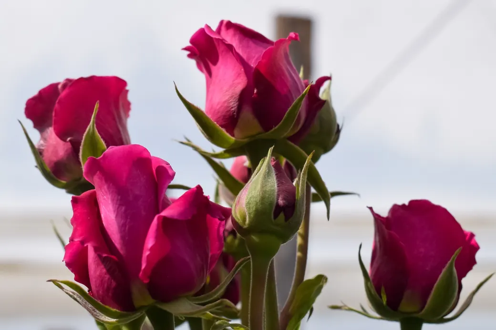

Del capullo al ramo
El momento del corte determina buena parte de lo que vemos días después en el florero.

Cuando eliges un ramo, sueles mirar primero el color y luego cuántas flores están abiertas. En el cultivo se mira también algo que puede pasar inadvertido: el punto de apertura. Dos capullos del mismo tamaño pueden estar en momentos distintos. Uno tiene los pétalos tan juntos que apenas deja ver el color. En el otro, los pétalos exteriores ya empezaron a soltarse.
La variedad de rosa y el tiempo de traslado influyen en el momento de cosechar. Un ramo que viajará lejos necesita llegar con tiempo por delante. Durante la preparación se revisan las flores y se agrupan tallos similares. Esa atención, que rara vez vemos al comprar un ramo, ayuda a que las flores se acomoden juntas y abran a un ritmo parecido.
En casa puedes seguir el cambio durante varios días. Pon las rosas en un florero limpio, quita las hojas que quedarían debajo del agua y deja el ramo lejos del sol directo. Escoge una flor del centro y vuelve a mirarla al día siguiente. Quizá descubras que el movimiento más evidente ocurre en el pétalo exterior, que primero se dobla y luego deja espacio al de adentro.
Ver un botón en la planta y otro en el florero da continuidad a dos escenas que normalmente conocemos por separado. La próxima vez que regales un ramo, piensa también en el día en que se abrirá del todo.